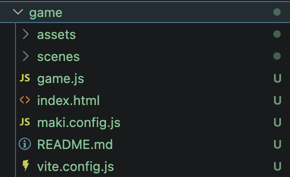
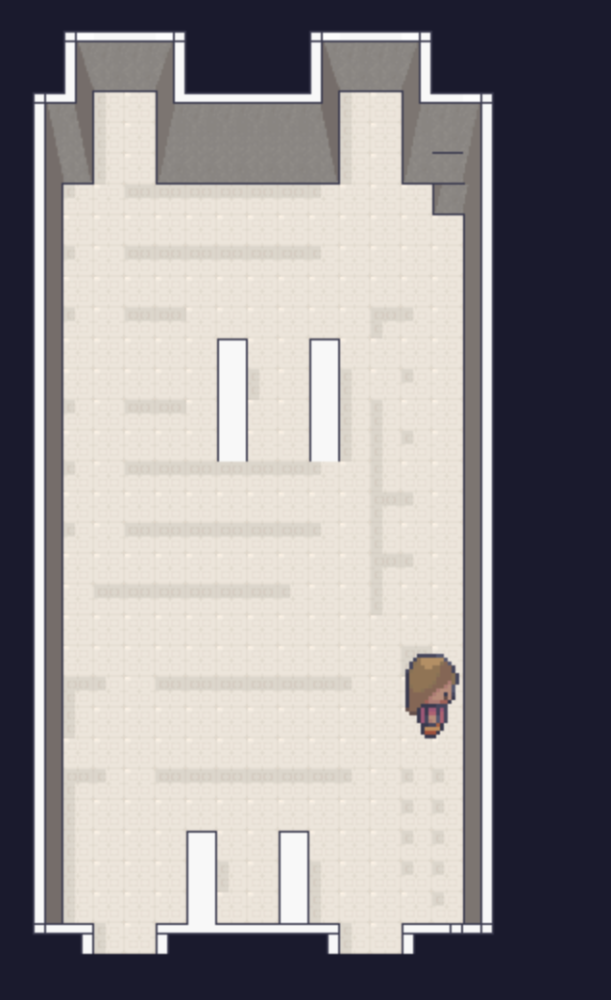
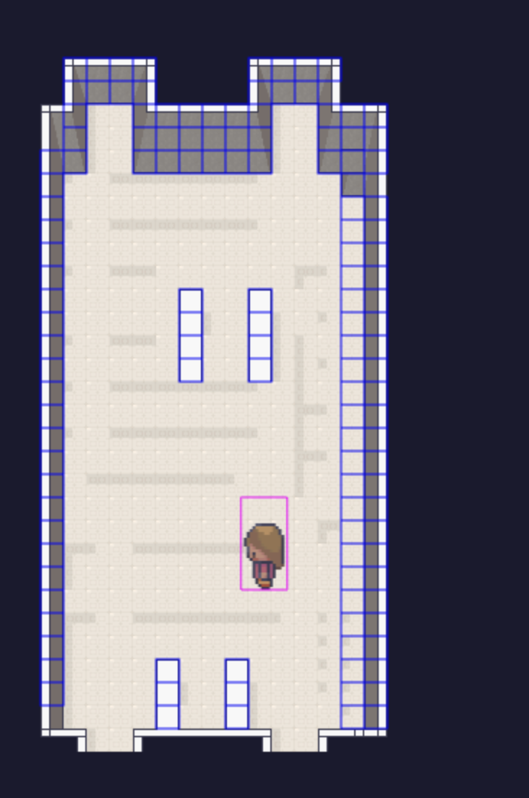
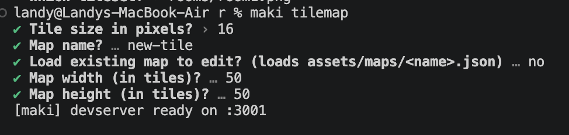
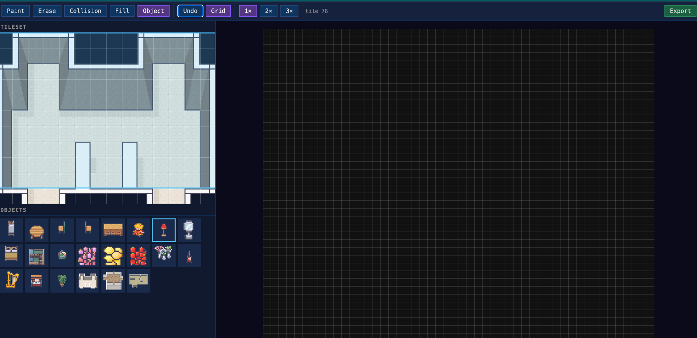
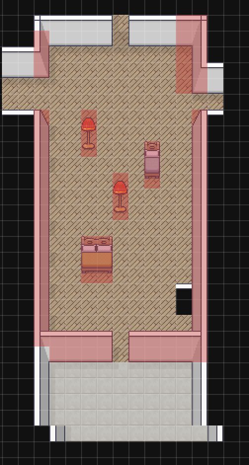

Build your first Maki game, understand the generated project structure, run the game locally, create a custom tilemap, and switch between scenes.
By the end of this tutorial, you will have:
lia.maki tilemap.Install the Maki package with npm:
npm install @tialops/makiCreate a new game project from the CLI. (here game is the name i choose, you can choose anything):
maki new gameThis creates a game folder with a structure like this:

Inside the generated folder, you will find:
img/ - template img for the game.scenes/ - scene files for your game.game.js - the main game entry file.index.html - the HTML page used by the game.maki.config.js - Maki configuration.README.md - the generated README file.vite.config.js - Vite configuration for local development.Open the default scene file. It should look similar to this:
import { Scene, manager } from '@tialops/maki'
import NewScene from './NewScene.js'
export default class GameScene extends Scene {
constructor() {
super('GameScene')
}
preload() {
this._makiPlayers = []
super.preload()
this.lia = this.maki.player('lia')
manager.map(this, 'default_map')
manager.preload(this)
}
create() {
super.create()
manager.create(this)
// Place Lia in the center of the map.
// 50 tiles x 16px = 800px, so the center is 400, 400.
this.lia.sprite.setPosition(400, 400)
this.physics.add.collider(
this.lia.sprite,
manager.getWallGroup(this, 'default_map')
)
if (!this.scene.get('NewScene')) {
this.scene.add('NewScene', NewScene, false)
}
this.input.keyboard.on('keydown-T', () => {
this.scene.stop('GameScene')
this.scene.start('NewScene')
})
}
update() {
this.maki.move(this.lia)
}
}Scene gives you the Maki scene base class.manager.map(this, 'default_map') loads the default map.manager.preload(this) preloads map img.manager.create(this) creates the map in the scene.this.maki.player('lia') creates a player called lia.this.lia.sprite.setPosition(400, 400) places Lia in the center of the map.manager.getWallGroup(this, 'default_map') gets the collision objects from the map.this.maki.move(this.lia) allows Lia to move during the update() loop.T stops GameScene and starts NewScene.This file sets up the game and connects Maki with Phaser.
This file contains your Maki configuration.
For development, you can enable debug mode in your configuration. For example:
export default {
dev: true,
debug: true
}Debug mode helps you see collision areas while testing.
Start the development server:
maki devYou should see the default map and be able to walk around with Lia.

When debug mode is enabled, you can see collision outlines around walls and objects:

Maki includes a tilemap editor that helps you build your own map.
Run:
maki tilemapThe CLI will ask you a few questions, such as:
Example:

After the dev server starts, the tilemap editor opens:

The editor includes built-in layers, such as:
Furniture - place objects like beds, chairs, tables, and decorations.Wall - define room boundaries and walls.Collision - mark areas the player should not walk through.Create your room, place furniture, and experiment with the editor.
Example custom room:

When you are finished, click Export. Your new tilemap will be saved inside the game project.
Create a new scene file, for example:
game/scenes/NewScene.jsAdd this code:
import { Scene, manager } from '@tialops/maki'
export default class NewScene extends Scene {
constructor() {
super('NewScene')
manager.map(this, 'new-tile')
}
preload() {
super.preload()
this.lia = this.maki.player('lia')
manager.preload(this)
console.log('NewScene constructor')
}
create() {
super.create()
manager.create(this)
this.lia.sprite.setPosition(400, 400)
this.input.keyboard.on('keydown-Y', () => {
this.scene.stop('NewScene')
this.scene.start('GameScene')
})
}
update() {
this.maki.move(this.lia)
}
}Replace 'new-tile' with the name of the map you exported if you used a different name.
The tutorial uses two keyboard shortcuts:
T in GameScene to switch to NewScene.Y in NewScene to switch back to GameScene.That is it - you now have a basic Maki game with a custom tilemap and scene switching.
npm install @tialops/maki
maki new game
cd game
maki dev
maki tilemapCheck that the map name in your scene matches the exported tilemap name:
manager.map(this, 'new-tile')Enable debug mode in maki.config.js:
export default {
debug: true
}Make sure NewScene is imported and added inside GameScene:
import NewScene from './NewScene.js'
if (!this.scene.get('NewScene')) {
this.scene.add('NewScene', NewScene, false)
}Then use the keyboard shortcuts:
T to go to NewScene.Y to return to GameScene.